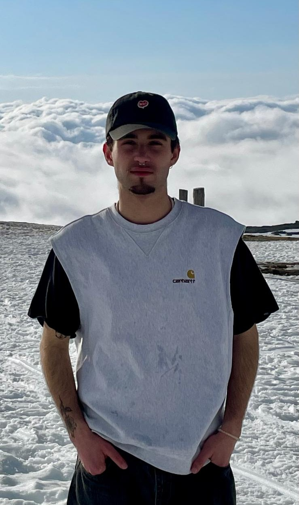

Ari Jesus
Aspiring Gameplay Programmer & Game Designer

Who am I?
Bio & SkillsAbout Me
I am a final-year Computer Science student with a strong interest in game development, actively working on personal projects to strengthen my gameplay programming skills, including C++, Unreal Engine, and 3D modeling. I’m a gamer who loves getting lost in immersive open worlds and fascinated by games that blur the line between reality and imagination, due to that I aim to build worlds so enganing that provoke the same feeling to other players.
Main Skills
- C++ | Java
- Unreal Engine 5 (Bluprints & C++)
- Mathematics and Physics for Games
- Design Enthusiast

Out Of Balance
C++ | Blueprints | Unreal Engine 5Description
This project is a narrative-driven game developed in Unreal Engine, focused on exploration and environmental puzzle-solving. The player takes on the role of a character revisiting important memories, represented as interactive physical spaces. By interacting with objects and reorganizing elements within the environment, the player gradually reconstructs meaningful moments. These puzzles are not only mechanical but also narrative-driven, reflecting emotions and past experiences. The game follows a minimalist storytelling approach, relying on environment, sound, and interaction rather than explicit dialogue, encouraging player interpretation.
What I did
- Developed object interaction system using C++
- Implemented object detection using sweep traces
- Implemented inventory system
- Developed lock-and-key systems
- Designed and implemented environmental puzzle systems
- Integrated gameplay logic with UI (Blueprints)
- Designed all narrative of the game
Technical Details
- Developed in Unreal Engine 5
- C++ programming with Blueprint integration
- Used C++ Interface for modular interaction logic
Challenges
One of the biggest challenges was optimizing the sweep trace system for object detection. Initially, it caused processing spikes when many objects were close together. I solved this by implementing a culling and tag filtering system, ensuring that the engine only checked objects strictly necessary for the puzzle.
Current Roadmap
- Level Design & World Building: Expanding the modular environment and refining the atmosphere through lighting and soundscapes.
- UI/UX Framework: Developing a cohesive menu system (Main Menu, Pause, and Inventory) using Unreal Motion Graphics (UMG) and C++ for state management.
- Advanced Mechanics: Implementing a Save/Load system to track player progress through the narrative.
Obstacle Assault
C++ | Blueprints | UE5The Beginning of the Journey
The main objective of this project was to explore the engine's architecture and the transition from pure programming logic to real-time game development. To complete this project, I followed the lessons from the "Unreal Engine 5++ Game Development" course by the GameDev.tv Team on Udemy.com.
Technical Exploration
- C++ Class Creation: Learning the Unreal Engine class structure (Actors and Components) and how the code communicates with the editor.
- The Tick Function & Movement: Study of the Tick component to create constant motion, applying Delta Time concepts to ensure that obstacles move at the same speed on any computer.
- Physics & Math: Study of speed, direction and vectors for the positioning of mobile platforms.
- Blueprints Integration: Introduction to the Unreal visual system for exposing C++ variables (EditAnywhere) and allowing quick adjustments in the editor.
Level Design & Assets
Beginning of the Level Design study, focusing on the rhythm of the obstacles and on the progressive challenge. I used free assets to build the environment, focusing my energy on the backend logic and the functionality of the traps.
Gameplay Preview
This video is a gameplay by a dear friend of mine.
Physics Ball Room
C++ | Unreal Engine 5Learning Prototype
This was a mini-project developed through a Udemy course with the goal of experimenting with the physics capabilities of Unreal Engine 5. The main focus was understanding how to apply forces to 3D objects.
Technical Highlights
- Shooting System: Implementation of a simple shooting system in C++ for firing projectiles that interact with the environment.
- Physics Interactions: Study of collisions, mass and impulses applied to different types of objects.
Level Design & Assets
I used free assets to build the environment, focusing my energy on the backend logic and the functionality of the shooting system.